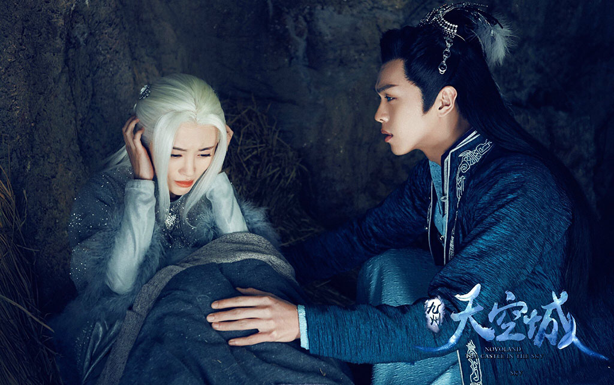
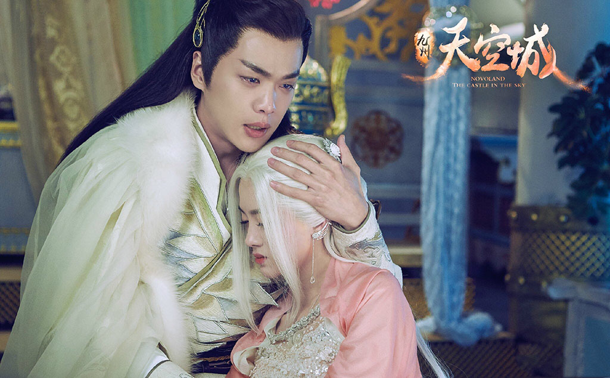
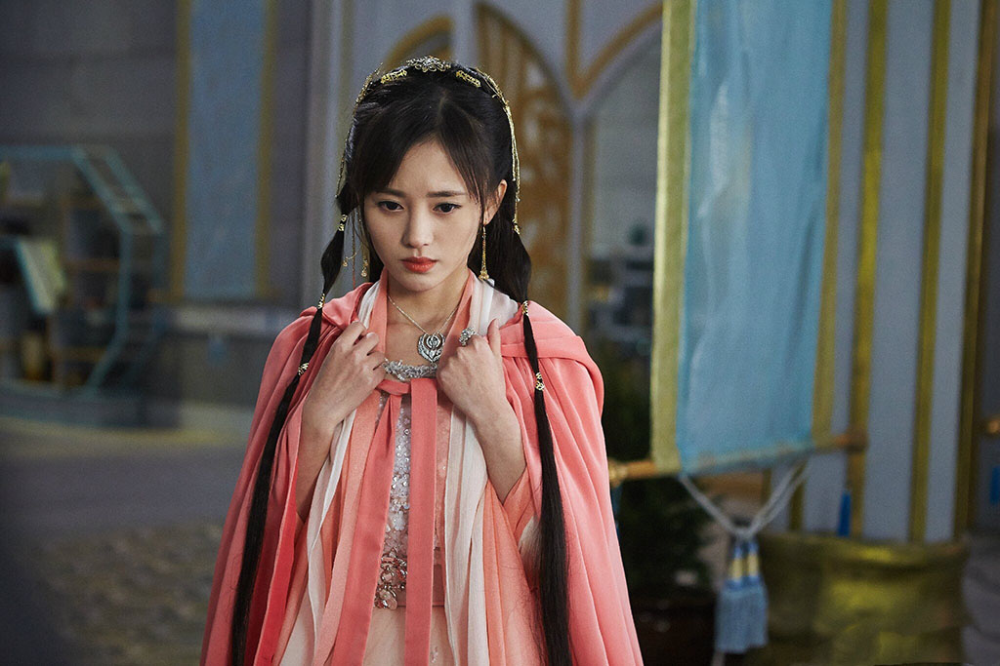
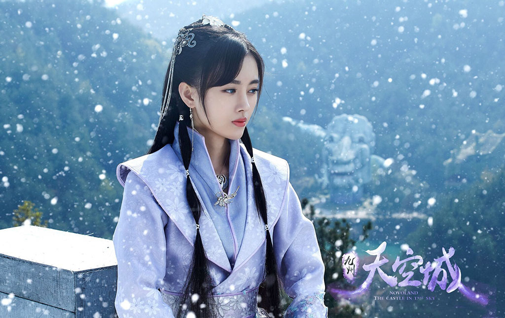
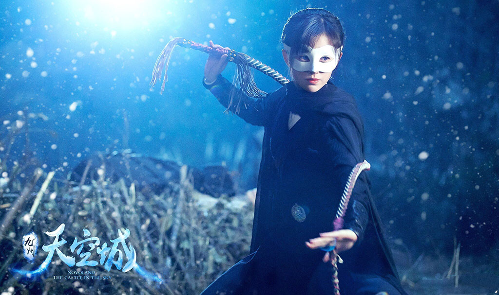

太古时代，羽族因为有飞翔能力，被天下苍生视为神明。羽族居住在姑射山上的青都，又制造出能够飞行的天空城，令各族艳羡不已。然而天空城升空时突然爆炸，羽族震怒。赶来观看升空仪式的人族女孩易茯苓阴差阳错地被当成爆炸事件的嫌疑犯。然而，同易茯苓有过一面之缘的羽族贵族青年风天逸不相信这是易茯苓所为，出于正义感他一次次救了易茯苓。其实这一切是羽族自己所为，他们不甘心只是充当一尊神祇，而想利用自身优势同各族争利，因此制造爆炸，挑起战争。明白了这一切的风天逸和易茯苓不甘心这样的事情发生，他们历尽艰辛终于令战事消弭。
    